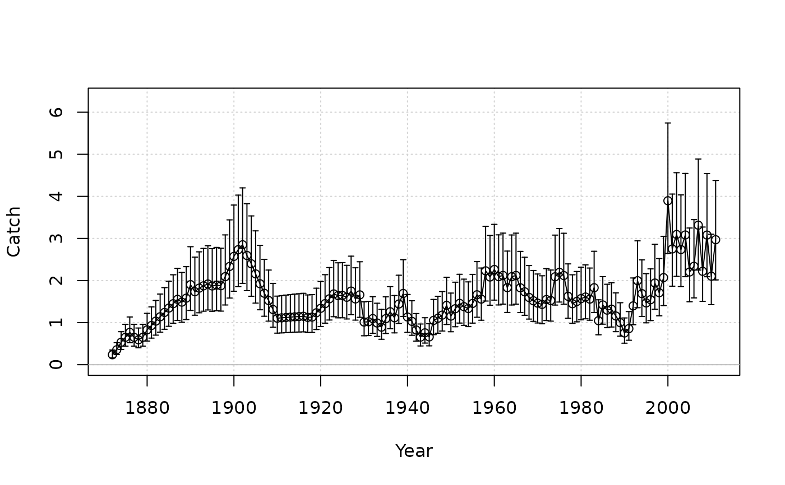

Plot time series of observed (with lognormally-distributed error bars) vs. predicted data.
Usage
plot_timeseries(
Year,
obs,
fit = NULL,
obs_CV = NULL,
obs_CV_CI = 0.95,
obs_upper = NULL,
obs_lower = NULL,
obs_ind_blue = NULL,
fit_linewidth = 3,
fit_color = "red",
label = "Observed data"
)Arguments
- Year
A vector of years for the data.
- obs
A vector of observed data.
- fit
A vector of predicted data (e.g., from an assessment model).
- obs_CV
A vector of year-specific coefficient of variation in the observed data.
- obs_CV_CI
The confidence interval for the error bars based for
obs_CV.- obs_upper
A vector of year-specific upper bounds for the error bars of the observed data (in lieu of argument
obs_CV).- obs_lower
A vector of year-specific lower bounds for the error bars of the observed data (in lieu of argument
obs_CV).- obs_ind_blue
Indices of
obsfor which the plotted points and error bars will be blue.- fit_linewidth
Argument
lwdfor fitted line.- fit_color
Color of fitted line.
- label
Character string that describes the data to label the y-axis.
Examples
data(Red_snapper)
plot_timeseries(Red_snapper@Year, Red_snapper@Cat[1, ],
obs_CV = Red_snapper@CV_Cat, label = "Catch")
